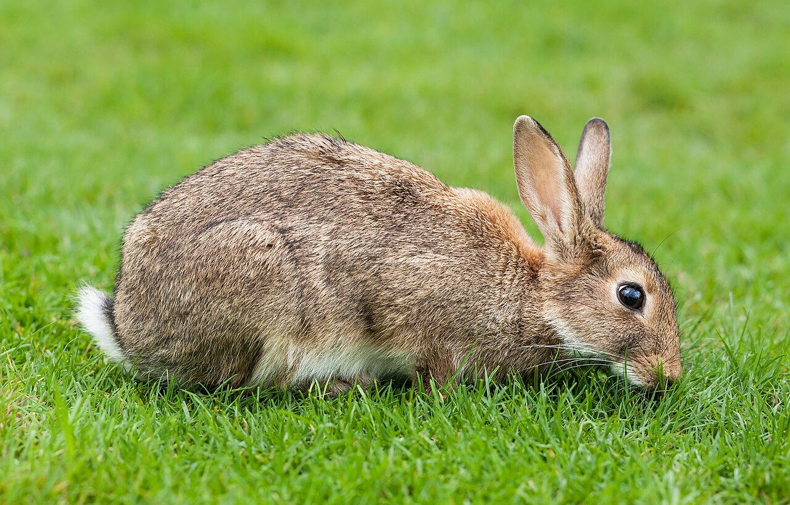

المملكة العربية السعودية — وزارة التعليم
كتاب العلوم — الجزء الأول من المقرر — طبعة ١٤٤٧ / ٢٠٢٥
سَلَاسِلُ الْغِذَاءِ
الصف الثاني الابتدائي
إعداد: نايف المطيري
موقع الدرس
أَيْنَ نَحْنُ فِي الْكِتَابِ؟ صفحات ٨٤ – ٨٨
الفصل الثالث نظرة إلى الموطنصفحة ٧٤
الدرس الثاني سلاسل الغذاءصفحات ٨٤ – ٨٨
سؤال الدرس: كَيْفَ تَعْتَمِدُ الْحَيَوَانَاتُ عَلَى حَيَوَانَاتٍ أُخْرَى؟ (ص ٨٦)
الأهداف
أَهْدَافُ التَّعَلُّمِ مستخلصة من ص ٨٤ – ٨٨
فِي نِهَايَةِ الدَّرْسِ أَكُونُ قَادِرًا عَلَى أَنْ:
أُعَرِّفَ السِّلْسِلَةَ الْغِذَائِيَّةَ. أُبَيِّنَ أَنَّ مُعْظَمَ سَلَاسِلِ الْغِذَاءِ تَبْدَأُ بِالشَّمْسِ. أُرَتِّبَ سِلْسِلَةً غِذَائِيَّةً عَلَى الْيَابِسَةِ وَأُخْرَى فِي الْمَاءِ. أُمَيِّزَ بَيْنَ الْمُفْتَرِسِ وَالْفَرِيسَةِ. أُبَيِّنَ دَوْرَ الدِّيدَانِ. التهيئة
أَنْظُرُ وَأَتَسَاءَلُ ص ٨٤ — سؤال الكتاب
تَحْتَاجُ الْحَيَوَانَاتُ إِلَى الْغِذَاءِ لِكَيْ تَعِيشَ. مَاذَا تَأْكُلُ الْحَيَوَانَاتُ الْمُخْتَلِفَةُ؟
معرفة سابقة
مَاذَا أَعْرِفُ مِنْ قَبْلُ؟ تمهيد تربوي
النَّبَاتُ يَصْنَعُ غِذَاءَهُ بِضَوْءِ الشَّمْسِ
الْحَيَوَانُ يَحْتَاجُ إِلَى الْغِذَاءِ
الْمَوْطِنُ يَجِدُ فِيهِ الْحَيَوَانُ غِذَاءَهُ
الْيَوْمَ مَنْ يَأْكُلُ مَنْ؟
توضيح إضافي: تَعَلَّمْنَا أَنَّ الْحَيَوَانَ يَجِدُ غِذَاءَهُ فِي مَوْطِنِهِ، وَالْيَوْمَ نَعْرِفُ تَرْتِيبَ ذَلِكَ.
المفردات
الْمُفْرَدَاتُ الْعِلْمِيَّةُ ص ٨٦ — مفردات الكتاب
السِّلْسِلَةُ الْغِذَائِيَّةُ تُوَضِّحُ التَّتَابُعَ الَّذِي تَحْصُلُ بِهِ الْمَخْلُوقَاتُ الْحَيَّةُ عَلَى الْغِذَاءِ.
الْمُفْتَرِسُ الْحَيَوَانُ الَّذِي يَصْطَادُ حَيَوَانَاتٍ أُخْرَى لِيَتَغَذَّى عَلَيْهَا.
الْفَرِيسَةُ الْحَيَوَانُ الَّذِي يَصْطَادُهُ الْحَيَوَانُ الْمُفْتَرِسُ.
الْمُفْرَدَاتُ الثَّلَاثُ كَمَا وَرَدَتْ فِي كِتَابِ الطَّالِبِ، صَفْحَتَا ٨٦ وَ ٨٧.
الفكرة الرئيسة
السُّؤَالُ الْأَسَاسِيُّ ص ٨٦
كَيْفَ تَعْتَمِدُ الْحَيَوَانَاتُ عَلَى حَيَوَانَاتٍ أُخْرَى؟
بِسِلْسِلَةٍ غِذَائِيَّةٍ تَبْدَأُ غَالِبًا بِالشَّمْسِ.
الشرح
مَا السِّلْسِلَةُ الْغِذَائِيَّةُ؟ ص ٨٦ — نص الكتاب
السِّلْسِلَةُ الْغِذَائِيَّةُ تُوَضِّحُ التَّتَابُعَ الَّذِي تَحْصُلُ بِهِ الْمَخْلُوقَاتُ الْحَيَّةُ عَلَى الْغِذَاءِ.
تَبْدَأُ مُعْظَمُ سَلَاسِلِ الْغِذَاءِ بِالشَّمْسِ .
هُنَاكَ الْكَثِيرُ مِنَ السَّلَاسِلِ الْغِذَائِيَّةِ؛ بَعْضُهَا عَلَى الْيَابِسَةِ، وَبَعْضُهَا الْآخَرُ فِي الْمَاءِ.
محاكاة
سِلْسِلَةُ الْغِذَاءِ حَلْقَةً حَلْقَةً محاكاة لشكل ص ٨٦ – ٨٧
سِلْسِلَةٌ عَلَى الْيَابِسَةِ
سِلْسِلَةٌ فِي الْمَاءِ
الْحَلْقَةُ التَّالِيَةُ
إِعَادَة
أقرأ الشكل
سِلْسِلَةٌ غِذَائِيَّةٌ عَلَى الْيَابِسَةِ ص ٨٦ – ٨٧ — شكل الكتاب
الشَّمْسُ تُسَاعِدُ النَّبَاتَ عَلَى النُّمُوِّ. الْحَشَرَةُ تَأْكُلُ النَّبَاتَ. السَّحْلِيَّةُ تَأْكُلُ الْحَشَرَةَ. الْأَفْعَى تَأْكُلُ السَّحْلِيَّةَ. الصَّقْرُ يَأْكُلُ الْأَفْعَى. أقرأ الشكل
سِلْسِلَةٌ غِذَائِيَّةٌ فِي الْمَاءِ ص ٨٦ – ٨٧ — شكل الكتاب
الشَّمْسُ تُسَاعِدُ الْعَوَالِقَ الْبَحْرِيَّةَ عَلَى النُّمُوِّ. الرُّوبِيَانُ يَأْكُلُ الْعَوَالِقَ الْبَحْرِيَّةَ. حِصَانُ الْبَحْرِ يَأْكُلُ الرُّوبِيَانَ. الْأَسْمَاكُ الْكَبِيرَةُ — وَمِنْهَا التُّونَةُ — تَأْكُلُ حِصَانَ الْبَحْرِ. سَمَكُ الْقِرْشِ يَأْكُلُ الْأَسْمَاكَ الْكَبِيرَةَ. سؤال من الكتاب
أَقْرَأُ الشَّكْلَ ص ٨٧
مَا الْفَرْقُ بَيْنَ كُلٍّ مِنَ السِّلْسِلَةِ الْغِذَائِيَّةِ عَلَى الْيَابِسَةِ وَالسِّلْسِلَةِ الْغِذَائِيَّةِ فِي الْمَاءِ؟
إظهار الإجابة إجابة نموذجية مقترحة كِلْتَاهُمَا تَبْدَأُ بِالشَّمْسِ ، ثُمَّ بِمَخْلُوقٍ يَصْنَعُ غِذَاءَهُ، ثُمَّ تَنْتَقِلُ إِلَى حَيَوَانَاتٍ يَأْكُلُ بَعْضُهَا بَعْضًا.سِلْسِلَةَ الْيَابِسَةِ تَبْدَأُ بِالنَّبَاتِ، وَتَعِيشُ حَيَوَانَاتُهَا عَلَى الْأَرْضِ (حَشَرَةٌ ← سَحْلِيَّةٌ ← أَفْعَى ← صَقْرٌ).سِلْسِلَةُ الْمَاءِ تَبْدَأُ بِالْعَوَالِقِ الْبَحْرِيَّةِ، وَتَعِيشُ حَيَوَانَاتُهَا فِي الْمَاءِ (رُوبِيَانٌ ← حِصَانُ الْبَحْرِ ← تُونَةٌ ← قِرْشٌ).
الشرح
الْمُفْتَرِسُ وَالْفَرِيسَةُ ص ٨٧ — نص الكتاب
تَتَغَذَّى الْحَيَوَانَاتُ عَلَى النَّبَاتَاتِ أَوْ عَلَى حَيَوَانَاتٍ أُخْرَى.
الْمُفْتَرِسُ الْحَيَوَانُ الَّذِي يَصْطَادُ حَيَوَانَاتٍ أُخْرَى لِيَتَغَذَّى عَلَيْهَا.
الْفَرِيسَةُ الْحَيَوَانُ الَّذِي يَصْطَادُهُ الْحَيَوَانُ الْمُفْتَرِسُ.
الشرح
الدِّيدَانُ ص ٨٧ — نص الكتاب
بَعْضُ الْحَيَوَانَاتِ تَتَغَذَّى عَلَى النَّبَاتَاتِ وَالْحَيَوَانَاتِ، وَمِنْهَا الدِّيدَانُ .
فَالدِّيدَانُ — مَثَلًا — تُفَكِّكُ الْمَخْلُوقَاتِ الْمَيِّتَةَ إِلَى قِطَعٍ صَغِيرَةٍ جِدًّا.
محاكاة
مُفْتَرِسٌ أَمْ فَرِيسَةٌ؟ تدريب تفاعلي على نص ص ٨٧
١ مِنْ ٦ الْإِجَابَاتُ الصَّحِيحَةُ: ٠
مُفْتَرِسٌ
فَرِيسَةٌ
أَخْتَارُ دَوْرَ الْحَيَوَانِ فِي هَذِهِ الْحَلْقَةِ.
سؤال من الكتاب
أَتَحَقَّقُ ص ٨٨
أَذْكُرُ أَسْمَاءَ بَعْضِ الْحَيَوَانَاتِ الْمُفْتَرِسَةِ الْأُخْرَى، وَفَرِيسَةَ كُلٍّ مِنْهَا.
إظهار الإجابة إجابة نموذجية مقترحة الصَّقْرُ ← فَرِيسَتُهُ الْأَفْعَى وَالْأَرْنَبُ.الْأَفْعَى ← فَرِيسَتُهَا السَّحْلِيَّةُ.السَّحْلِيَّةُ ← فَرِيسَتُهَا الْحَشَرَةُ.سَمَكُ الْقِرْشِ ← فَرِيسَتُهُ الْأَسْمَاكُ الْكَبِيرَةُ.الطَّائِرُ ← فَرِيسَتُهُ الدُّودَةُ.
أقرأ الشكل
سِلْسِلَةٌ غِذَائِيَّةٌ فِي الصَّحْرَاءِ ص ٨٨ — شكل الكتاب
تَحْتَاجُ النَّبَاتَاتُ إِلَى ضَوْءِ الشَّمْسِ لِتَصْنَعَ غِذَاءَهَا. يَأْكُلُ الْأَرْنَبُ النَّبَاتَاتِ. يَأْكُلُ الصَّقْرُ الْأَرْنَبَ. وَالدُّودَةُ فَرِيسَةٌ لِلطَّائِرِ. (ص ٨٨)
نشاط استقصائي
أَسْتَكْشِفُ — الْأَدَوَاتُ ص ٨٥ — نشاط الكتاب
سؤال النشاط: مَاذَا تَأْكُلُ الْحَيَوَانَاتُ؟
أَحْتَاجُ إِلَى:
أَشْرِطَةٍ وَرَقِيَّةٍ مُلَوَّنَةٍ
أَقْلَامِ تَلْوِينٍ
مَادَّةٍ لَاصِقَةٍ السلامة
أَثْنَاءَ النَّشَاطِ تعليمات السلامة — ص ٧
أَغْسِلُ يَدَيَّ جَيِّدًا قَبْلَ النَّشَاطِ وَبَعْدَهُ. أَنْتَبِهُ عِنْدَ اسْتِخْدَامِ الْمَادَّةِ اللَّاصِقَةِ، وَلَا أُقَرِّبُهَا مِنْ عَيْنَيَّ أَوْ فَمِي. أَسْتَعْمِلُ الْمِقَصَّ بِحَذَرٍ إِنِ احْتَجْتُ إِلَيْهِ، وَلَا أُشِيرُ بِهِ إِلَى أَحَدٍ. أُحَافِظُ عَلَى نَظَافَةِ الْمَكَانِ وَتَرْتِيبِهِ بَعْدَ الِانْتِهَاءِ. نشاط استقصائي
أَسْتَكْشِفُ — الْخُطُوَاتُ ص ٨٥ — الخطوات ١ – ٤
تُسَاعِدُ الشَّمْسُ النَّبَاتَاتِ عَلَى النُّمُوِّ. أَيُّ الْحَيَوَانَاتِ تَأْكُلُ النَّبَاتَاتِ، وَأَيُّهَا يَأْكُلُ الْحَيَوَانَاتِ الَّتِي تَأْكُلُ النَّبَاتَاتِ؟ أَرْسُمُ الشَّمْسَ عَلَى الشَّرِيطِ الْأَصْفَرِ، وَبَعْضَ الْأَعْشَابِ وَالْأَشْجَارِ عَلَى الشَّرِيطِ الْأَخْضَرِ، ثُمَّ أَرْسُمُ طَائِرًا عَلَى الشَّرِيطِ الْأَحْمَرِ، وَجَرَادَةً عَلَى الشَّرِيطِ الْبُنِّيِّ. التَّتَابُعُ. أَعْمَلُ سِلْسِلَةً مِنَ الْأَشْرِطَةِ، وَأُلْصِقُهَا بِحَسَبِ تَرْتِيبِهَا فِي سِلْسِلَةِ الْغِذَاءِ.أَتَوَاصَلُ. أَصِفُ تَرْتِيبَ السِّلْسِلَةِ الْغِذَائِيَّةِ الَّتِي كَوَّنْتُهَا.إجابة النشاط
التَّرْتِيبُ الصَّحِيحُ ص ٨٥
٤. أَتَوَاصَلُ. أَصِفُ تَرْتِيبَ السِّلْسِلَةِ الْغِذَائِيَّةِ الَّتِي كَوَّنْتُهَا.
إظهار الإجابة إجابة نموذجية مقترحة التَّرْتِيبُ: الشَّمْسُ (الشَّرِيطُ الْأَصْفَرُ) ← الْأَعْشَابُ وَالْأَشْجَارُ (الْأَخْضَرُ) ← الْجَرَادَةُ (الْبُنِّيُّ) ← الطَّائِرُ (الْأَحْمَرُ).
أستكشف أكثر
الْخُطْوَةُ الْخَامِسَةُ ص ٨٥
٥. أُكَرِّرُ النَّشَاطَ مَعَ ثَلَاثَةِ حَيَوَانَاتٍ أُخْرَى. أُبَيِّنُ كَيْفَ أُرَتِّبُ الْحَيَوَانَاتِ فِي السِّلْسِلَةِ الْغِذَائِيَّةِ.
إظهار الإجابة إجابة نموذجية مقترحة مِثَالٌ: الشَّمْسُ ← النَّبَاتَاتُ ← الْأَرْنَبُ ← الصَّقْرُ .الشَّمْسُ ← النَّبَاتُ ← الْحَشَرَةُ ← السَّحْلِيَّةُ ← الْأَفْعَى .
نشاط
نَشَاطُ الْكِتَابِ ص ٨٨ — نشاط الكتاب
أَتَوَاصَلُ. أُلْصِقُ صُوَرًا لِأُجَسِّدَ سِلْسِلَةً غِذَائِيَّةً.
أُرَتِّبُ الصُّوَرَ مِنَ الشَّمْسِ إِلَى النَّبَاتِ ثُمَّ الْحَيَوَانَاتِ، وَأَرْسُمُ سِهَامًا بَيْنَهَا.
تقويم الدرس
أُفَكِّرُ وَأَتَحَدَّثُ وَأَكْتُبُ — السُّؤَالُ الْأَوَّلُ ص ٨٨
١. الْفِكْرَةُ الرَّئِيسَةُ وَالتَّفَاصِيلُ. أَصِفُ سِلْسِلَةً غِذَائِيَّةً أَخْتَارُهَا.
إظهار الإجابة إجابة نموذجية مقترحة أَخْتَارُ سِلْسِلَةَ الصَّحْرَاءِ: تَحْتَاجُ النَّبَاتَاتُ إِلَى ضَوْءِ الشَّمْسِ لِتَصْنَعَ غِذَاءَهَا، ثُمَّ يَأْكُلُ الْأَرْنَبُ النَّبَاتَاتِ، ثُمَّ يَأْكُلُ الصَّقْرُ الْأَرْنَبَ. فَالصَّقْرُ مُفْتَرِسٌ، وَالْأَرْنَبُ فَرِيسَةٌ.
تقويم الدرس
السُّؤَالُ الثَّانِي ص ٨٨
٢. أَرْسُمُ سِلْسِلَةً غِذَائِيَّةً تَتَضَمَّنُ أَرْبَعَةَ حَيَوَانَاتٍ.
إظهار الإجابة إجابة نموذجية مقترحة مِثَالٌ مِنَ الْكِتَابِ (ص ٨٦ – ٨٧):الشَّمْسُ ← النَّبَاتُ ← الْحَشَرَةُ ← السَّحْلِيَّةُ ← الْأَفْعَى ← الصَّقْرُ
تقويم الدرس
السُّؤَالُ الثَّالِثُ ص ٨٨
٣. السُّؤَالُ الْأَسَاسِيُّ. كَيْفَ تَعْتَمِدُ الْحَيَوَانَاتُ عَلَى حَيَوَانَاتٍ أُخْرَى؟
إظهار الإجابة إجابة نموذجية تَعْتَمِدُ عَلَيْهَا فِي الْغِذَاءِ ؛ فَالْحَيَوَانُ الْمُفْتَرِسُ يَصْطَادُ حَيَوَانَاتٍ أُخْرَى لِيَتَغَذَّى عَلَيْهَا، وَالْحَيَوَانُ الَّذِي يَصْطَادُهُ يُسَمَّى الْفَرِيسَةَ .السِّلْسِلَةُ الْغِذَائِيَّةُ هَذَا التَّتَابُعَ، وَتَبْدَأُ مُعْظَمُهَا بِالشَّمْسِ.
الْعُلُومُ وَالصِّحَّةُ (ص ٨٨): أُفَكِّرُ فِي وَجْبَةِ غَدَاءٍ صِحِّيَّةٍ، وَأُوَضِّحُ كَيْفَ أَنَّهَا جُزْءٌ مِنْ سِلْسِلَةٍ غِذَائِيَّةٍ. أَرْسُمُ هَذِهِ السِّلْسِلَةَ.
تدريب إضافي
أَسْئِلَةٌ تَدْرِيبِيَّةٌ إِضَافِيَّةٌ من إعداد المعلم — ليست من الكتاب
١. بِمَ تَبْدَأُ مُعْظَمُ سَلَاسِلِ الْغِذَاءِ؟
إظهار الإجابة الإجابة بِالشَّمْسِ. (ص ٨٦)
٢. مَا دَوْرُ الدِّيدَانِ؟
إظهار الإجابة الإجابة تُفَكِّكُ الْمَخْلُوقَاتِ الْمَيِّتَةَ إِلَى قِطَعٍ صَغِيرَةٍ جِدًّا. (ص ٨٧)
الملخص
مَاذَا تَعَلَّمْتُ؟ خلاصة ص ٨٤ – ٨٨
السِّلْسِلَةُ الْغِذَائِيَّةُ تُوَضِّحُ التَّتَابُعَ الَّذِي تَحْصُلُ بِهِ الْمَخْلُوقَاتُ الْحَيَّةُ عَلَى الْغِذَاءِ. تَبْدَأُ مُعْظَمُ سَلَاسِلِ الْغِذَاءِ بِالشَّمْسِ. مِنَ السَّلَاسِلِ مَا هُوَ عَلَى الْيَابِسَةِ، وَمِنْهَا مَا هُوَ فِي الْمَاءِ. الْمُفْتَرِسُ يَصْطَادُ حَيَوَانَاتٍ أُخْرَى، وَالْفَرِيسَةُ هِيَ الَّتِي يَصْطَادُهَا. الدِّيدَانُ تُفَكِّكُ الْمَخْلُوقَاتِ الْمَيِّتَةَ إِلَى قِطَعٍ صَغِيرَةٍ جِدًّا. خريطة مفاهيم
أُرَتِّبُ أَفْكَارِي تنظيم لمحتوى الدرس
السِّلْسِلَةُ الْغِذَائِيَّةُ
عَلَى الْيَابِسَةِ
شَمْسٌ ← نَبَاتٌ حَشَرَةٌ ← سَحْلِيَّةٌ أَفْعَى ← صَقْرٌ
فِي الْمَاءِ
شَمْسٌ ← عَوَالِقُ رُوبِيَانٌ ← حِصَانُ الْبَحْرِ تُونَةٌ ← قِرْشٌ
تقويم ختامي
أَخْتَارُ الْإِجَابَةَ الصَّحِيحَةَ تفاعلي — أسئلة تدريبية
١. تَبْدَأُ مُعْظَمُ سَلَاسِلِ الْغِذَاءِ بِـ:
الشَّمْسِ الصَّقْرِ الدُّودَةِ
٢. الْحَيَوَانُ الَّذِي يَصْطَادُ حَيَوَانَاتٍ أُخْرَى يُسَمَّى:
فَرِيسَةً مُفْتَرِسًا مَوْطِنًا
٣. فِي سِلْسِلَةِ الْمَاءِ يَأْكُلُ الرُّوبِيَانُ:
الْعَوَالِقَ الْبَحْرِيَّةَ سَمَكَ الْقِرْشِ التُّونَةَ
بطاقة الخروج
قَبْلَ أَنْ أُغَادِرَ الصَّفَّ تقويم ختامي
١ مَا السِّلْسِلَةُ الْغِذَائِيَّةُ؟
٢ مَا الْفَرْقُ بَيْنَ الْمُفْتَرِسِ وَالْفَرِيسَةِ؟
٣ أَذْكُرُ سِلْسِلَةً مِنْ ثَلَاثِ حَلَقَاتٍ.
أَكْتُبُ إِجَابَاتِي فِي بِطَاقَةٍ صَغِيرَةٍ وَأُسَلِّمُهَا لِلْمُعَلِّمِ.
إثراء اختياري
محاكاة: سلسلةُ الغذاء إثراء اختياري الشمس الشمس ١ النبات النبات ٢ حيوانٌ يأكل النبات حيوانٌ يأكل النبات ٣ حيوانٌ يأكل غيره حيوانٌ يأكل غيره ٤ سلسلةُ الغذاء: تنتقل الطاقة من مخلوقٍ إلى آخر.
الشمس النبات حيوانٌ يأكل النبات حيوانٌ يأكل غيره
اضغط على أيِّ عنصرٍ في الرسم، أو تابع الخطوات بالترتيب.
◀ السابق التالي ▶
إثراء اختياري
هَلْ تَعْلَمُ؟ إثراء اختياري ١
كلُّ سلسلة غذاءٍ تبدأ من الشمس .
٢
النبات يصنع غذاءه، ثم يأكله الحيوان.
٣
الطاقة تنتقل من مخلوقٍ إلى آخر.
سلسلة الغذاء تبيِّن من يأكل مَن.
إثراء اختياري
بِطَاقَاتُ الْمُفْرَدَاتِ — اضْغَطْهَا! إثراء اختياري السِّلْسِلَةُ الْغِذَائِيَّةُ اضغط لترى المعنى
تُوَضِّحُ التَّتَابُعَ الَّذِي تَحْصُلُ بِهِ الْمَخْلُوقَاتُ الْحَيَّةُ عَلَى الْغِذَاءِ.
الْمُفْتَرِسُ اضغط لترى المعنى
الْحَيَوَانُ الَّذِي يَصْطَادُ حَيَوَانَاتٍ أُخْرَى لِيَتَغَذَّى عَلَيْهَا.
الْفَرِيسَةُ اضغط لترى المعنى
الْحَيَوَانُ الَّذِي يَصْطَادُهُ الْحَيَوَانُ الْمُفْتَرِسُ.
إظهار كل المعاني
اضغط على البطاقة لترى المعنى.
إثراء اختياري
لُعْبَةٌ: رَتِّبْ بِالتَّرْتِيبِ الصَّحِيحِ إثراء اختياري الشمس طائر نبات أرنب
↻ إعادة الترتيب
رتِّب سلسلة الغذاء.
إثراء اختياري
الْعُلُومُ فِي حَيَاتِي إثراء اختياري طبِّق ارسم سلسلة غذاءٍ من ثلاث حلقات.
فكِّر من أين جاءت الطاقة في تفَّاحتك؟
🔎 إثراء مصوّر
عدسة العلوم ألاحظ · أتساءل · أفسّر
ما العلاقة الغذائية بين الأرنب والعشب الذي يحيط به؟

🔍 تكبير الصورة أرنب أوروبي يتغذى على العشب؛ مثال لحيوان ثديي عاشب. الصورة: Diliff · مصدر الصورة · CC BY-SA 3.0 · نسخة مصغرة دون تغيير المحتوى
👁️ يصنع النبات غذاءه، وتحصل الحيوانات على غذائها من نباتات أو حيوانات أخرى.
💡 توضح سلسلة الغذاء انتقال الغذاء والطاقة بين المخلوقات في موطن واحد.
🌿 يتجه سهم السلسلة من الغذاء إلى المخلوق الذي يأكله، وليس العكس.
مراجع الإثراء للمعلم
🧩 رسم تفاعلي
تتبع الغذاء من النبات إلى المفترس أربط الأفكار
اضغط عناصر الرسم لاكتشاف معناها والعلاقة بينها.
1 🌿 عشب ← 2 🐇 أرنب ← 3 🦊 ثعلب
السهم يبدأ بالمأكول وينتهي بمن يأكله؛ هذه علاقة ممكنة في موطن مناسب.
🧪 مختبر الاستكشاف
غيّر غذاء الأرنب داخل سلسلة افتراضية أتوقّع · أجرّب · أقارن
كيف يتغير الغذاء المتاح للأرنب عندما تتغير كمية العشب وحدها؟
كمية العشب
قليلة متوسطة كثيرة
▶ شغّل المحاكاة ↺ إعادة
المؤشر لا يحسب أرانب أو ثعالب؛ يوضح أثر تغير مورد واحد فقط.
مؤشر وصفي للعشب المتاح
🌿 🌿 🌿 🌿 🌿 🌿 🌿 🌿 🌿 🌿
يبقى عدد الأرانب نفسه في النموذج، لكن العشب قليل، فيكون الغذاء المتاح أقل.
توقّع النتيجة، ثم غيّر الحالة وشغّل المحاكاة.
🤔 كيف قد يؤثر نقص العشب في حيوان يأكل الأرنب؟
انْتَهَى الدَّرْسُ إعداد: نايف المطيري
العلوم — الصف الثاني الابتدائي — الجزء الأول من المقرر
↺ البداية
▶ السابق
التالي ◀
إظهار كل الإجابات
⛶ ملء الشاشة
إعداد: نايف المطيري